Introduction
Groove is a music studio for RISC OS. You drag ready-made loops into a song, draw drum beats on a grid, play tunes on your computer keyboard and record them, and then save the result as a WAV file you can play anywhere.
You don't need to read music or play an instrument. If you can drag a file and press keys, you can make a song with Groove.
About this guide
The guide comes with Groove: choose User guide from the menu on Groove's icon bar icon, and it opens in your web browser (NetSurf, for example). If no web browser is set up, Groove tells you so. The file itself is !Groove.Guide.index/html, if you'd rather open it yourself.
You don't need to read it in order. If all you want is a drum beat, go to Chapter 7. If you're new to music software, start at Part I and do the Try it examples as you go. By the end of Chapter 5 you'll have made and played your first song.
The pictures are screenshots of Groove running on RISC OS 5.
This is an early version
Groove 0.3 is an early version. It's still being tested, so you may come across bugs. If you change something by mistake, Ctrl+Z (Undo) takes it back (Chapter 3), but save your song now and then as well (Chapter 13).
What we assume you know
Not much. You should know the three mouse buttons (Select on the left, Menu in the middle, Adjust on the right), and how to drag a file from a Filer window into a program. You don't need to know anything about music.
The boxes in this guide
Where to start
If Groove isn't installed yet, start at Chapter 2. If it is, go to Chapter 3. The Appendix lists every key, mouse action and menu on one page; it's worth printing.
Part I: Getting StartedInstalling Groove and finding your way round
1 What Groove does
Groove is a small music studio. A song is made of tracks, one above another, all playing at the same time: a drum track, a bass track, a piano track and so on. On each track you place regions: blocks of music that start at a certain bar. Most regions hold notes; an audio region holds a recording.
What you can do with it
- Loops: 18 ready-made loops (drums, bass, keys and lead) that you drag into your song. They're played in your song's key.
- Drums: draw a beat on a grid of eight drums and sixteen steps a bar, or on all 128 MIDI drum keys. Two drum kits.
- Notes: draw, move and delete notes in a piano roll of all 128 MIDI notes; select several to move, copy, transpose or make louder together.
- Controllers: draw modulation, volume, pan, sustain, pitch bend and program changes in a lane under the notes.
- Musical typing: play your computer keyboard like a piano, chords included, or a MIDI keyboard.
- MIDI out: let a MIDI keyboard, sound module or software synth play any track, on the channel, bank and program you choose.
- Recording: record what you play, after a bar of clicks to get ready; Groove tidies the timing for you.
- Arranging: move, stretch, split, copy and paste regions; rename and reorder tracks.
- Undo: take back changes, up to 100 of them, and redo them again.
- Seven instruments of Groove's own: Electric Piano, Synth Bass, Warm Pad, Square Lead, Plucked Guitar, Drawbar Organ and Glass Bells.
- SoundFont sounds: with !SoftMIDI installed, any track can use one of 128 General MIDI instruments or 8 drum kits instead.
- Mixing: volume, pan, mute and solo for each track, a master volume, and a touch of reverb.
- Files: save songs; export a WAV of your song; import and export MIDI files; play Maestro music; bring in WAV recordings.
- Any time signature: 3/4, 6/8 and the rest, changing part-way through a song if you like.
What you need
| You need | Because |
|---|---|
| RISC OS 5 on a Raspberry Pi 2 or later (an ARMv7 processor with VFP) | Groove is built for these processors. |
| SharedUnixLibrary 1.16 or later, and ARMEABISupport | Groove uses them. You can get both through PackMan. Groove checks for them when it starts. |
| SharedSound | For sound. It comes with RISC OS 5. |
| !SoftMIDI (optional) | Only for SoundFont sounds (Chapter 12). Everything else works without it. |
| A web browser such as NetSurf (optional) | Only for reading this guide from Groove's menu. |
2 Installing and starting
Installing
- Unzip
Groove-0.3.zipwith SparkFS or PackMan's unzip, so the files keep their RISC OS file types. - Drag !Groove to wherever you keep your applications, for example your
Appsdirectory. - If you want SoundFont sounds, install !SoftMIDI as well, and open the directory it's in once, so the Filer sees it.
Starting
Double-click !Groove. Groove puts its icon on the icon bar and opens straight into a new song: the song window across the top of the screen and the Loops window on the right. The new song has two empty tracks, Drums and Electric Piano, ready to play.
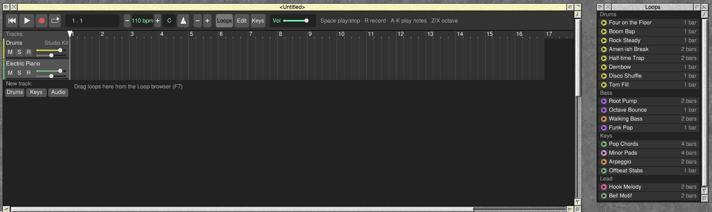
The icon bar icon
If you close Groove's windows, Groove keeps running. Click Select on its icon bar icon to open the song window again, or Adjust to open the Loops window.
Click Menu on the icon for the icon bar menu:
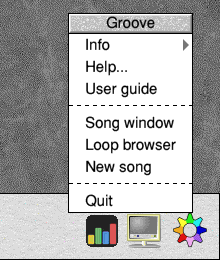
| Item | What it does |
|---|---|
| Info | Move to the arrow to see the Info box: the program's name, purpose, author and version. |
| Help... | Opens Groove's short !Help file. |
| User guide | Opens this guide in your web browser. If none is set up, Groove says so (opening an HTML page without one would show you its source in a text editor). |
| Song window, Loop browser | Open those windows. |
| New song | Starts a new song (asking first if the current one has unsaved changes). |
| Quit | Quits Groove. |
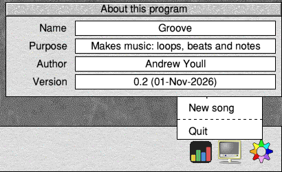
Quitting
Choose Quit from the icon bar menu. If your song has changes you haven't saved, Groove asks first.
3 Finding your way round the screen
Groove's windows are laid out to fill the screen, together working like one big window. You can move and resize any of them; Groove remembers where you put each one while it's running.
| Window | What it's for | How to open it |
|---|---|---|
| Song window | Your song: tracks down the left, time running left to right. | Opens at start; Select on the icon bar icon. |
| Loops | Ready-made loops to drag into your song. | Opens at start; F7, or the Loops button. |
| Editor | The notes in one region: a drum grid or a piano roll. | F8, the Edit button, or double-click a region. |
| Keyboard | Shows the keys for musical typing; you can click its keys too. | F9, the Keys button, or Musical typing in the main menu. |
The toolbar
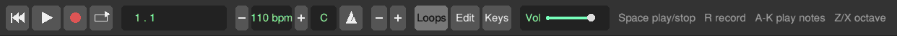
From left to right:
| Button | What it does |
|---|---|
| Rewind | Back to the start of the song. |
| Play / Stop | Plays the song, or stops it. Same as Space. |
| Record (red dot) | Records what you play (Chapter 10). Same as R. |
| Cycle (arrow) | Turns cycle on and off: playing goes round and round a few bars (Chapter 5). Orange when on. |
| Display | Where the playhead is, as bar . beat. It also shows PLAY, REC, or COUNT while Groove counts you in to a recording. |
| − 110 bpm + | The tempo, in beats per minute (40 to 240). − and + change it by 1, or by 10 with Adjust. Clicking the number itself adds 5 (Adjust takes 5 away). |
| Key (C) | The song's key. Select moves it up a semitone, Adjust down. Loops you add after that are played in the new key. |
| Metronome | Turns the click on and off. It clicks on every beat while you play or record, a higher click on the first beat of each bar. |
| − + (zoom) | Zooms out and in on the timeline. |
| Loops, Edit, Keys | Open the Loops, Editor and Keyboard windows. They're lit while that window is open. |
| Vol | The master volume: how loud the whole song is, in Groove and in exported WAVs. Drag the slider. |
| The words on the right | A reminder of the main keys: Space play/stop, R record, A to K play notes, Z/X octave. |
Tracks and the timeline
Each track has a header on the left with its name and controls (see Chapter 11). To its right is the timeline, with the bar numbers along the ruler at the top. The white line with a triangle on the ruler is the playhead: where playing starts. The song is 16 bars long to begin with; the timeline is darker past the end of the song.
The window's title is the song's name (<Untitled> until you save it), with a * after it when there are changes you haven't saved.
Tracks are coloured by what they play: drums yellow, recordings blue, and instruments by their kind (keyboards green, basses purple, leads pink, guitars orange and so on). Regions and loops take their track's colour.
Below the tracks, New track: has three buttons, Drums, Keys and Audio, for adding an empty track. A song can have up to 32 tracks; the song window scrolls to show them all.
To see more of a long song, use the scroll bar along the bottom of the song window: drag it, or click its arrows, to move along the song. The track names on the left stay where they are. The scroll bar's length matches the song at the zoom you're using, and it moves by itself when the song window follows the playhead.
Changed your mind? Undo
Press Ctrl+Z, or choose Undo from the main menu, to take back your last change: a moved region, a deleted track, a recording, a change of tempo, notes you drew. Press it again to go further back, up to 100 changes. Ctrl+Y (Redo) puts back what you undid. If you undo all the way back to when you last saved, the * goes from the title.
Undo covers changes to the song. Playing, moving the playhead and arming a track for recording aren't changes, so Undo leaves them alone.
Part II: Making MusicLoops, beats, notes and recording
4 Loops: your first song in five minutes
The Loops window lists 18 short pieces of music, grouped as Drums, Bass, Keys and Lead, with each one's length in bars. Loops are the quickest way to start a song.
Listening to a loop
Click a loop's name. It plays over and over, and its row is highlighted. Click it again to stop it, or click another loop to hear that one instead. Pressing Play stops it too.
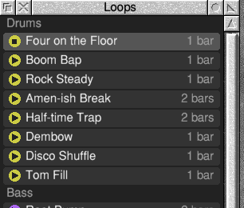
Putting a loop into your song
- Drag the loop's name out of the Loops window.
- Drop it on a track in the song window, at the bar where you want it to start. It snaps to the nearest bar.
Drop a drum loop on a drum track, and a bass, keys or lead loop on an instrument track. If you drop a loop below the tracks, or on a track of the wrong kind, Groove makes a new track for it with a suitable sound.
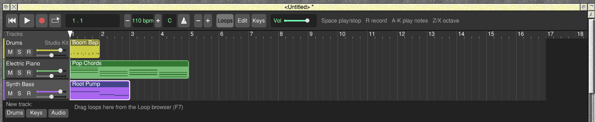
Making a loop play for longer
A loop goes into the song at its own length, but you can make it repeat. Move the pointer to the right-hand end of the region (the last few pixels), then drag to the right. The region's notes repeat to fill it. The end snaps to the start of a bar: "stretch it to bar 5" means it ends where bar 5 begins, under the 5 on the ruler.
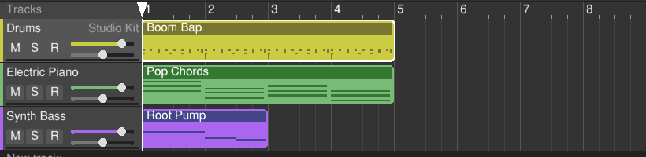
5 Playing your song
Press Space or click Play. Playing starts at the playhead. The display shows the bar and beat, the playhead moves along, and the level meters under each track's name light up. Press Space again to stop.
Moving the playhead
- Click (or drag) along the ruler with Select. The playhead snaps to beats.
- Return or the Rewind button goes back to the start.
- ← and → move a bar back or on.
Playing stops by itself at the end of the song and goes back to the start.
Going round and round: cycle
Cycle plays the same few bars over and over, which is handy while you work on one part. Click the Cycle button to turn it on: an orange bar on the ruler shows which bars go round (bars 1 to 4 to begin with).
To choose the bars, drag with Adjust along the ruler from the first bar you want to the bar after the last one. That turns cycle on as well.
Cycle only goes round once the playhead is inside it. If the playhead is before the cycle, playing goes on until it reaches the cycle, then goes round. If it's after the cycle, playing just carries on: move the playhead to the start of the cycle first (click there on the ruler).
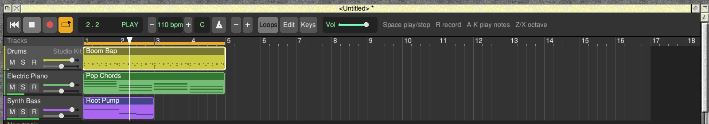
Tempo, key and metronome
The toolbar's tempo, key and metronome controls are described in Chapter 3. The tempo changes while you play, so you can try a few speeds.
Time signature
A new song is in 4/4: four beats a bar. For a waltz (3/4), a jig (6/8) or anything else, choose Song → Time signature from the main menu and pick one: 2/4, 3/4, 4/4, 5/4, 6/8, 7/8, 9/8 or 12/8. It applies from the bar the playhead is in, so put the playhead at the start to change the whole song, or further on to change part-way through.
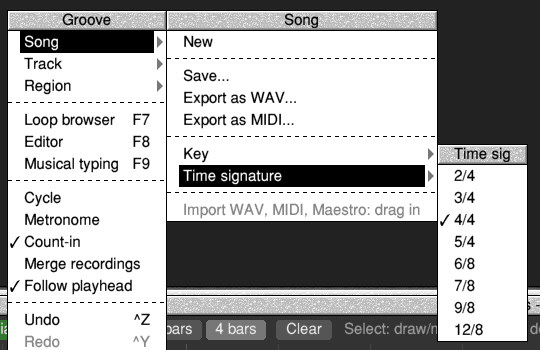
The ruler shows a time signature in orange next to the bar number where it starts (bar 1 shows one only if it isn't 4/4). Bars, the metronome, the count-in, the display's bar . beat and snapping all follow it. In 6/8 a beat is a quaver, so the metronome clicks six times a bar.
Zooming and following
The zoom buttons widen or narrow the bars. Zooming keeps the playhead where it is on the screen, so you don't lose your place. While a song plays, the song window turns the page to keep the playhead in view; to stop that, untick Follow playhead in the main menu.
6 Arranging regions
Each block on a track is a region. Click a region to select it (it gets a white outline); the Editor shows its notes if it's open.
| To | Do this |
|---|---|
| Move a region | Drag it with Select. It snaps to bars (to beats when you're zoomed well in). You can drag it to another track of the same kind. |
| Make it longer or shorter | Drag its right-hand end. Notes repeat to fill a longer region. |
| Copy it straight after itself | Select it, then Region → Duplicate in the main menu. |
| Copy it somewhere else | Select it and press Ctrl+C (Region → Copy). Then put the playhead where you want the copy and press Ctrl+V (Region → Paste). It goes on the selected track if that's the right kind, otherwise on the first track that is. You can paste as many times as you like. |
| Cut it in two | Select it, put the playhead where you want the cut, and press Ctrl+T (Region → Split at playhead). The right-hand part becomes a region of its own, and is selected. |
| Delete it | Select it and press Delete, or choose Region → Delete. |
| Edit its notes | Double-click it, or select it and press F8. |
| Make a new, empty region | Double-click an empty part of a drum or instrument track. You get a one-bar region, open in the Editor, ready to fill. |
| Select it without moving it | Click it with Adjust. |
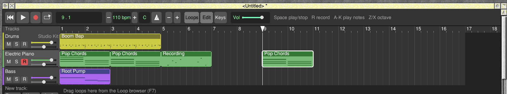
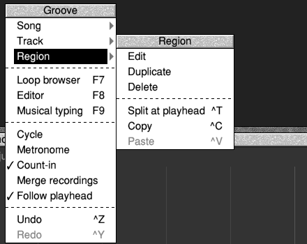
7 Drums: the step grid
Double-click a region on a drum track and the Editor shows the step grid: a row for each of eight drums (Kick, Snare, Hi-hat, Open hat, Clap, Low tom, High tom and Cowbell) and sixteen steps per bar, so each step is a sixteenth note. A lit square is a drum hit. Below the grid is the controller lane (see below).
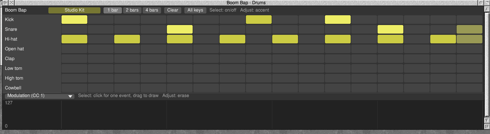
- Select on a square turns the hit on or off. Keep the button down and drag along the row to paint (or rub out) several at once.
- Adjust on an empty square adds an accented hit; Adjust on a hit switches it between accented and normal.
- Click a drum's name on the left to hear it.
- While the song plays, the step being played is highlighted.
The Editor's header
Across the top of the Editor are the region's name, then buttons:
| Button | What it does |
|---|---|
| The coloured sound button (Studio Kit here) | Opens the Sound menu for the track (Chapter 12). |
| 1 bar, 2 bars, 4 bars | Sets the region's pattern length. Making it shorter deletes the notes past the new end. Making it longer repeats what's there: going from 1 bar to 2 copies bar 1 into bar 2. |
| Clear | Removes every note in the region, and its controller events. |
| All keys / Kit rows | Drum tracks only: shows all 128 drum keys, or just the kit's rows (see below). |
All 128 drum keys
Each row is a MIDI drum key: Kick is key 36, Snare 38, and so on, as in General MIDI. Click All keys to see every key from 0 to 127, named after its General MIDI drum where it has one (35 Acoustic Bass Drum to 81 Open Triangle). The grid opens at key 35, and the kit's own eight keys are in white. Click a square to put a hit on any key: a crash cymbal on 49, say, for a MIDI drum machine or a SoundFont kit.
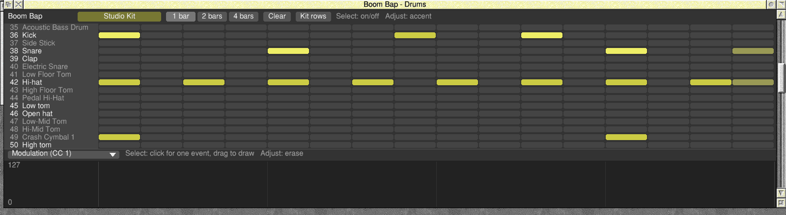
Click Kit rows to go back. The kit's eight rows are always there, and a key that has hits in this region gets a row of its own under them, with its number, so nothing you've put in is hidden.
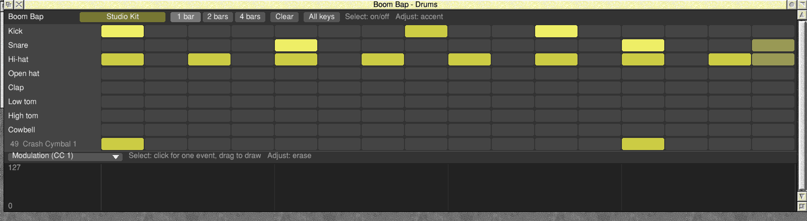
8 Notes: the piano roll
Double-click a region on an instrument track and the Editor shows the piano roll: a keyboard down the left, time across, and each note as a bar. The higher the bar, the higher the note; the longer, the longer it sounds. The roll has all 128 MIDI notes, from C-1 to G9, and opens scrolled to where the notes are.
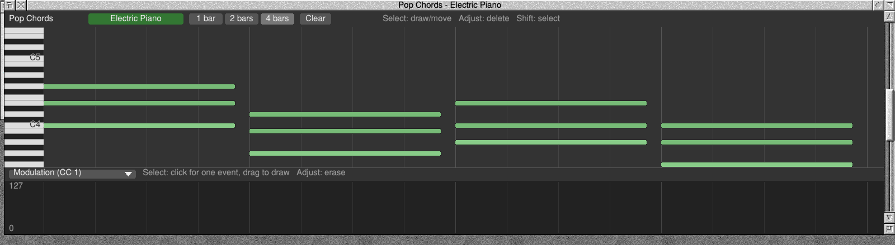
- Select on an empty place draws a note one step long; keep the button down and drag right to make it longer.
- Select on a note selects it (it gets a white outline); drag to move it, earlier or later and up or down. Notes snap to sixteenths.
- Adjust on a note deletes it.
- Click the keyboard on the left to hear a note; drag up and down it to play a run.
The header buttons are the same as for drums (Chapter 7). Brighter notes are louder ones.
Working with several notes
To change several notes at once, select them first:
- Shift+click a note to add it to the selection (or take it out again).
- Hold Shift and drag across an empty part of the roll to draw a box: every note in it is selected.
- Ctrl+A selects every note in the region; Escape selects none.
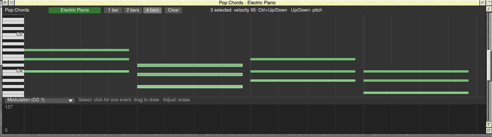
Then:
| To | Do this |
|---|---|
| Move them | Drag any one of them: the rest go with it. |
| Move them up or down | ↑ / ↓ a semitone; with Shift, an octave. |
| Make them louder or softer | Ctrl+↑ / Ctrl+↓. |
| Delete them | Delete. |
| Copy them | Ctrl+C, then Ctrl+V. The copies go where the playhead is, if it's inside this region (otherwise at the region's start), and are selected, so you can drag them where you want them. |
The controller lane
Under the notes is the controller lane, for the things that change while notes play: modulation, volume, pan, the sustain pedal, pitch bend and so on. Each bar in the lane is an event that sets the controller from that moment on. The button on the left of the lane says which controller it shows; the lane shows only that one, and the others' events stay where they are.
- Select on the lane puts an event there, at the height you click; drag across the lane to draw a run of them, following the pointer.
- Adjust, clicked or dragged, rubs events out.
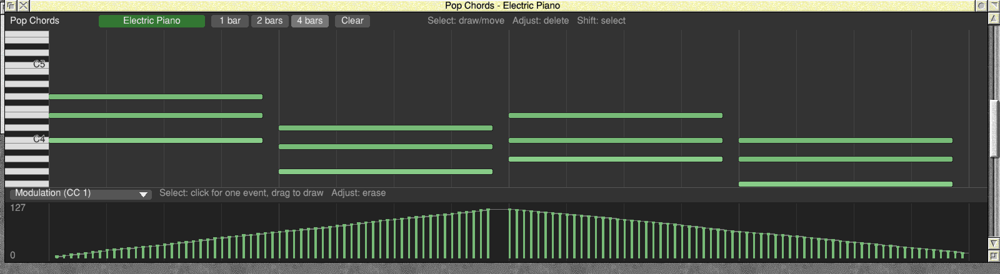
Click the button to choose the controller. The menu has the common ones (the one showing is ticked, and any with events in this region say how many), then Pitch bend, Channel pressure and Program change. Other CC takes any controller number from 0 to 127.
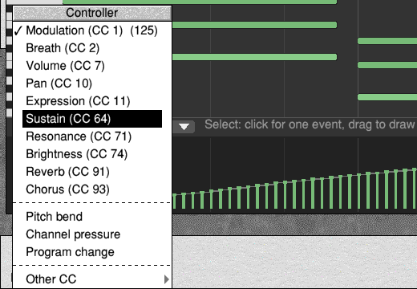
Most controllers run from 0 to 127. Pitch bend runs from −8192 to 8191, drawn up or down from the line across the middle, which is no bend. Program change picks the instrument from that moment, from 0 to 127.
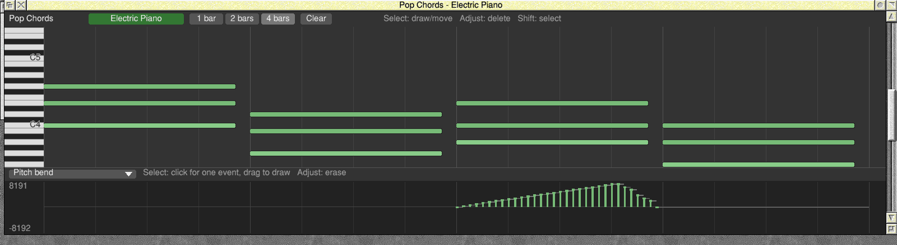
Controllers play on MIDI out (Chapter 12) and with SoundFont sounds, and go into exported MIDI files. When you start the song part-way through, Groove first sends each controller's latest setting before that point, so a pedal or bend is right from the first note. Groove's own sounds ignore controllers.
9 Playing from the computer keyboard
Your computer keyboard plays the selected track (click a track's name to select it). Press F9 to see the Keyboard window, which shows which key is which note and lights the keys you're holding. You don't need the window open to play.
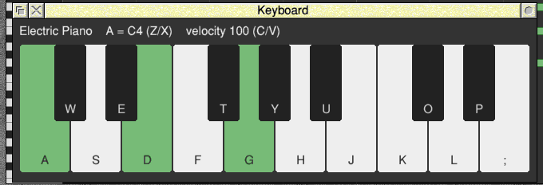
| Keys | What they play |
|---|---|
| A S D F G H J K L ; | The white notes, from C (on A) upwards. |
| W E T Y U O P | The black notes in between. |
| Z / X | An octave down / up (up to three either way). |
| C / V | Softer / louder (the velocity, in steps of 20). |
The Keyboard window's top line shows the track, which note A plays (C4 to begin with) and the velocity. Notes sound for as long as you hold the key, and you can hold several keys at once to play chords. You can also click the keys in the window with the mouse.
On a drum track, A to K are the eight drums: A Kick, S Snare, D Hi-hat, F Open hat, G Clap, H Low tom, J High tom, K Cowbell (labelled Bell on the Keyboard window, for room).
Playing a MIDI keyboard
If you have a MIDI keyboard, plugged in by USB or through a MIDI interface, Groove can play it like the computer keyboard: it plays the selected track, the harder you press the louder the note, and recording works the same way. On a drum track, the keyboard's drum keys play the drums (the General MIDI layout: the C two octaves below middle C is the kick, the D above it the snare, and so on). The sustain pedal holds notes until you let it go.
Groove can hear a MIDI keyboard in two ways. Use whichever your MIDI software provides.
Through MIDI Support
Pete Everett's MIDI Support (!MidiSupp, his RISC OS 5 version of ESP's MIDI system) connects MIDI things together: USB and serial MIDI ports, his on-screen MIDIKeyboard, synths, and programs like Groove. When MIDI Support is loaded, Groove joins in as a driver called Groove, and you connect what you play to it:
- Run !MidiSupp (once is enough; it stays loaded), then start Groove.
- In the MIDI Manager, connect your keyboard's port (or MIDIKeyboard) to Groove. Or type it at the command line (F12, or a task window):
*MIDIConnect MIDIPort0 Groove, using the names*MIDIMaplists. - Click the name of the track you want to play, and play.
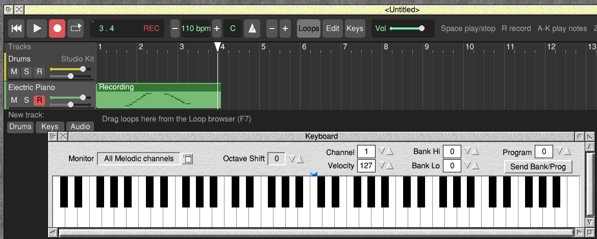
Because you've connected it to Groove, the keyboard plays Groove whichever window has the input focus. When Groove quits, it leaves MIDI Support, and Groove goes from the list.
Through a MIDI module's ports
Without MIDI Support, Groove reads the ports of a MIDI module directly. Rick Murray and Dave Hinton's USBMIDI module is the usual one: it handles USB MIDI keyboards and USB MIDI interfaces (with DIN sockets for older instruments), up to four MIDI ports. With a MIDI module loaded, Groove listens to the keyboard straight away, on any port.
Choosing
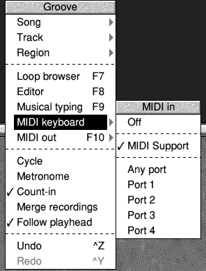
Choose MIDI keyboard in the main menu to pick MIDI Support, Any port or one port of a MIDI module, or Off. Groove starts with MIDI Support if it's loaded, otherwise any port. Without either, the item says MIDI keyboard (needs MIDI).
When MIDI input is on, a small dot shows at the top left of the toolbar's display, and lights up while notes are coming in.
10 Recording what you play
Recording puts what you play on the keyboard into a new region on the track.
- Click the name of the track you want to record on, to select it.
- Put the playhead in the bar where you want to start.
- Press R (or click the Record button). Groove counts you in with a bar of clicks, one a beat (in 4/4 the display counts down COUNT 4, 3, 2, 1), then recording starts from the beginning of that bar: the display shows REC, and the track's R button turns red.
- Play. A region called Recording grows as you go, and the rest of the song plays along with you.
- Press R again, or Space, to stop.
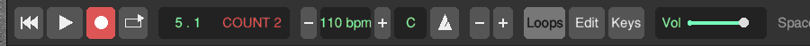
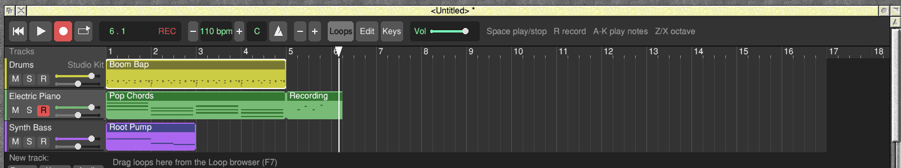
When you stop, Groove moves each note you played to the nearest sixteenth, so small timing slips are tidied away. If you didn't play anything, no region is left behind. The track stays armed (its R stays red) for next time; click R to disarm it.
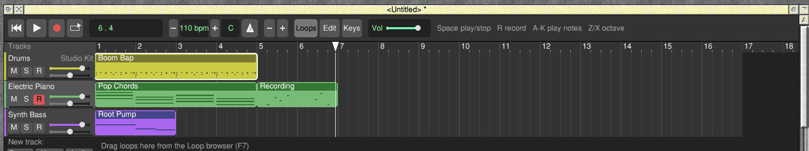
Recording over a region: Merge recordings
Normally each recording makes a new region, on top of anything already on the track. To add to a part instead (play the chords first, then the tune on top), tick Merge recordings in the main menu. Then notes you record over an existing region go into that region; only notes played where there was no region make a new one.
Part III: Sounds and the MixGetting the balance right and choosing instruments
11 Tracks and the mix
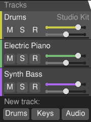
| Control | What it does |
|---|---|
| Name | Click it to select the track: the keyboard plays it and recording goes onto it. Drag it up or down to move the track. Drum tracks also show their kit on the right. |
| M (mute) | Silences the track. Click again to hear it. |
| S (solo) | Plays only the soloed tracks. You can solo several. |
| R (record) | Arms the track for recording (Chapter 10). |
| Top slider | Volume. Drag it. |
| Bottom slider | Pan: left to right in the stereo picture. The middle is "sticky", so it's easy to put back in the centre. |
| The thin coloured line along the bottom of the header | The level meter: how loud the track is as it plays. |
Adding and deleting tracks
Click Drums, Keys or Audio under the tracks, or use the main menu's Track submenu (New drummer track, New instrument track, New audio track). To delete the selected track, choose Track → Delete track.
Renaming and moving tracks
To rename the selected track, choose Track → Rename from the main menu and move to the arrow: the track's name appears in a box. Ctrl+U clears it; type the new name and press Return. A track you've named keeps its name when you change its sound.
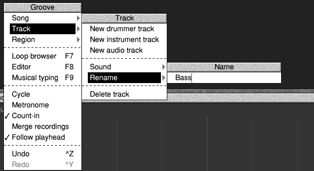
To change the order of the tracks, drag a track's name up or down: the track moves as you drag.
The master volume
The Vol slider on the toolbar sets how loud the whole song is. Turn it down if the song sounds harsh when everything plays at once; it affects exported WAVs too, and is saved with the song.
12 Choosing sounds, including SoundFont sounds
Each drum or instrument track has a sound. To change it, select the track and choose Track → Sound from the main menu, or click the coloured sound button in the Editor's header.
Groove's own sounds
For instrument tracks: Electric Piano, Synth Bass, Warm Pad, Square Lead, Plucked Guitar, Drawbar Organ and Glass Bells. For drum tracks: Studio Kit and Electro Kit. When you choose an instrument, the track is renamed after it; a drum track keeps its name and shows the kit on the right of its header. Audio tracks have no sound to choose, so Sound is greyed out for them.
SoundFont sounds
If !SoftMIDI is installed, the Sound menu also has a SoundFont item (SoundFont kits on drum tracks). Its submenu has the 16 General MIDI families (Piano, Chromatic percussion, Organ, Guitar, Bass, Strings, Ensemble, Brass, Reed, Pipe, Synth lead, Synth pad, Synth effects, World, Percussive and Sound effects), each with eight instruments: 128 in all. Drum tracks get 8 kits: Standard, Room, Power, Electronic, 808, Jazz, Brush and Orchestra.
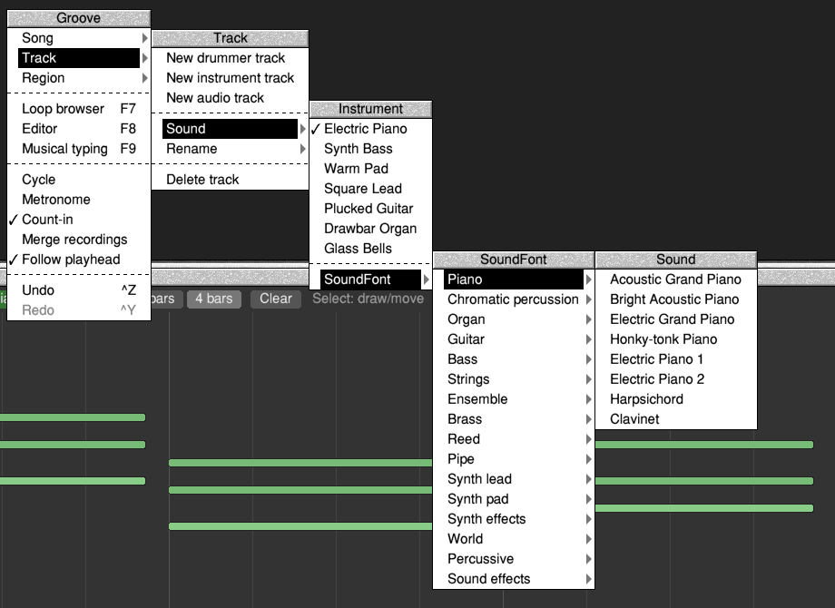
The first time you choose a SoundFont sound, Groove loads !SoftMIDI's SoundFont, which takes a few seconds (the hourglass shows). After that, SoundFont sounds work like Groove's own: in the mix, in recordings and in exported WAVs.
Playing on a MIDI instrument: MIDI out
A track can be played by a MIDI instrument instead of by Groove: a keyboard or sound module on a USB or MIDI cable, or a software synth such as Pete Everett's MidiSynth. Select the track and choose Track → Play on MIDI out, or press F11; do the same again to turn it off. The track's header then says MIDI out (once MIDI out has somewhere to send), and its notes, its sound (as a General MIDI program), its volume and its pan are sent to the instrument; muting the track turns it down there.
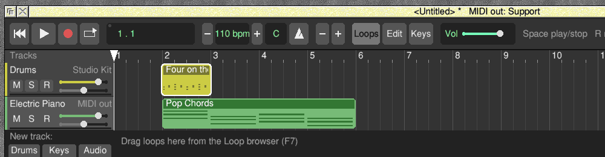
To send the whole song, choose Song → Play on MIDI out, or press Shift+F11: every drum and instrument track goes on MIDI out (audio tracks always play in Groove). It's ticked when they all are; choose it again, or press Shift+F11 again, to turn them all off.
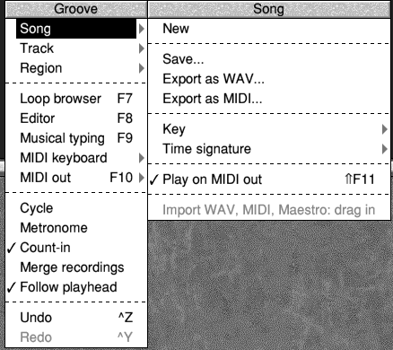
Where it's sent is chosen with MIDI out in the main menu, or with F10, which moves on to the next choice each time you press it (Off, MIDI Support, Port 1 to Port 4, and round again; choices that aren't there are skipped). While MIDI out is on, the song window's title says where it goes, for example MIDI out: Support; when it's Off, the title is just the song's name.
- MIDI Support: from Groove's Groove driver to whatever you connect it to in the MIDI Manager, or with
*MIDIConnect Groove MIDISynth(or a port name:*MIDIMaplists them). - Port 1 to Port 4: straight to a MIDI module's port, such as USBMIDI's.
- Off: nothing is sent, and MIDI out tracks play Groove's own sound (or their SoundFont sound) instead. MIDI out starts Off; turning Play on MIDI out on for a track or the song while it's Off picks the first choice that's there (MIDI Support, else Port 1).
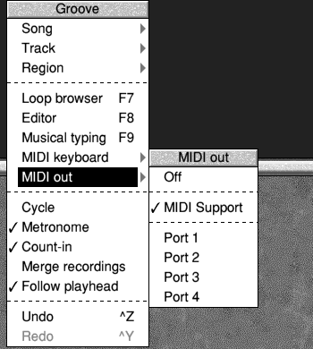
Notes you play live go out at once. Notes from the song go out when Groove's own sound from the same moment reaches your speakers, so the instrument plays in time with the rest of the song.
MIDI channel, bank and program
Groove gives each instrument track a MIDI channel of its own, in order, skipping 10, and puts drum tracks on channel 10. It picks the program (the instrument) from the track's sound. To choose them yourself, for an instrument that has its sounds in banks or listens on a channel of its own, select the track and use these items in the Track menu:
- MIDI channel: Auto (Groove's choice) or 1 to 16. Two tracks can share a channel.
- Bank & program: type the Bank MSB (controller 0), Bank LSB (controller 32) and Program numbers, from 0 to 127, and press Return. Clear a box for Groove's choice: no bank select, and the program from the sound.
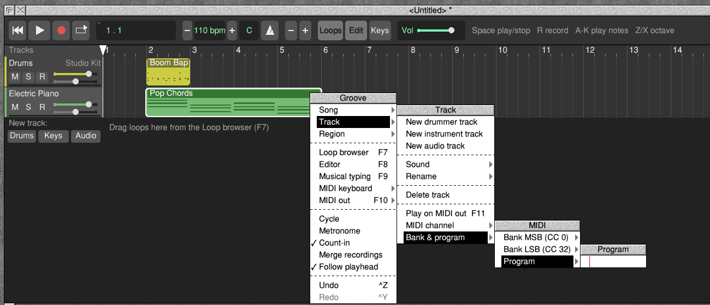
These are saved with the song, sent to a MIDI instrument each time you play, used by SoundFont sounds, and written into exported MIDI files. A Program change in a region's controller lane changes the instrument from that point on.
Part IV: FilesSaving, exporting and bringing music in
13 Saving and opening songs
Saving
- Press Ctrl+S, or choose Song → Save from the main menu. The save box opens.
- Type a name (Ctrl+U clears the box first), then drag the file icon to a Filer window. Or type a full pathname (for example
SDFS::ePic.$.Music.MySong) and press Return or click Save.
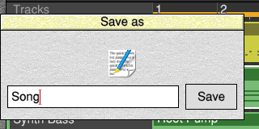
The song window's title shows the song's full name, with a * after it when there are changes you haven't saved.
Opening a song
Drag a saved song onto Groove's song window or its icon bar icon. If Groove is running, you can also double-click the song in the Filer. Either way, if your current song has unsaved changes, Groove asks first.
Starting a new song
Choose Song → New from the main menu, or New song from the icon bar menu. You get a new song with a Drums and an Electric Piano track.
Song_A0, Song_A1 and so on: keep them with the song.14 Exporting a WAV file
To make a file anyone can play, choose Song → Export as WAV, then save it as you would a song. Groove plays the whole song through, from the start to the end of the last region plus two seconds for the echoes to die away, and writes a 16-bit stereo WAV at 44.1 kHz. Cycle is ignored; muted tracks stay silent.
If you've saved the song, the name in the save box starts as the song's full name with _mix on the end (otherwise just Mix), so the WAV goes next to the song unless you drag it somewhere else.
15 MIDI files and Maestro music
Importing a MIDI file
Drag a MIDI file (file type &FD4) onto the song window, at the bar where you want it to start, or onto Groove's icon bar icon to start at bar 1. Groove makes a new track for each part, named after its instrument, and cuts the music into 4-bar regions you can edit. The drum part becomes a drum track, keeping every drum key (Chapter 7).
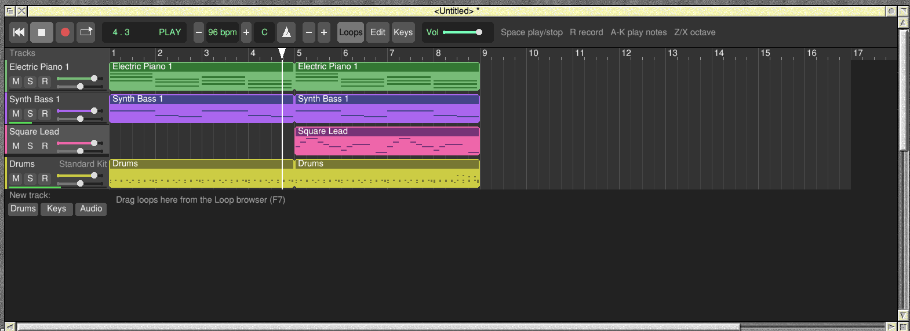
Imported tracks use SoundFont sounds, so they sound like the original if you have !SoftMIDI (Chapter 12). Each track keeps its part's MIDI channel, bank and first program, and the part's controllers go into the controller lane: later program changes, pitch bends, the sustain pedal and so on, so a MIDI instrument plays them all. If the song was empty, it also takes the MIDI file's tempo and time signatures.
Exporting a MIDI file
Choose Song → Export as MIDI and save it as you would a song (the name starts as the song's name with _midi on the end, or MIDI). You get a standard MIDI file with a part for each drum and instrument track, which other music programs can open. Groove's own sounds are given the nearest General MIDI instrument, and the song's time signatures go in too, with each track's channel, bank and program, and its controller events.
Maestro music
Maestro is the music-writing program that comes with RISC OS, and Groove plays its files (file type &AF1, the ones with the music icon). RISC OS 5 has some in Documents.Music.Maestro to try. Drag one onto the song window, at the bar where you want it to start, or onto Groove's icon bar icon to start at bar 1.
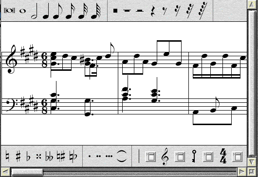
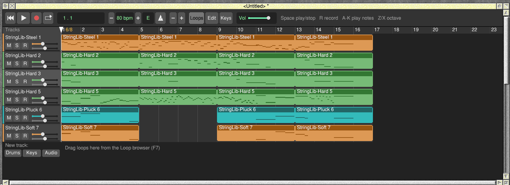
Groove makes a track for each of Maestro's channels that has notes, named after the voice Maestro plays it with (StringLib-Soft, for example) and the channel number. It plays the music the way Maestro does:
- The notes: each note's pitch comes from its line on the stave and the clef. Sharps and flats from the key signature apply, and so does an accidental, for the rest of that bar on that line, just as in printed music.
- The timing: note lengths, dots and rests. Tied notes are played as one long note.
- The song: if the song was empty, Groove also takes Maestro's tempo, its key and its time signatures, including any changes part-way through.
- Each channel's setting: Maestro's volume and stereo position for each channel become the track's volume and pan.
- Sounds: each voice gets the nearest SoundFont instrument; the StringLib voices become guitars, harp and harpsichord, and WaveSynth-Beep becomes a square-wave lead. Percussion voices make drum tracks. Without !SoftMIDI, Groove's own nearest sounds play instead. You can choose any other sound with Track → Sound.
16 Using your own recordings
Drag a WAV file onto a track in the song window. If you drop it on an audio track, it goes there at the bar you dropped it on; anywhere else, Groove makes a new audio track for it. Groove reads 8, 16 and 24-bit WAV files, mono or stereo.
Audio regions can be moved like any other, and made shorter, but not longer than the recording. They have no notes, so the Editor has nothing to show for them.
Part V: The Part of TensQuick answers
17 Ten keys to learn first
| Key | Does |
|---|---|
| Space | Play / stop |
| R | Record / stop recording |
| Return | Back to the start |
| ← → | A bar back / on |
| A to ;, W to P | Play notes |
| Z X | Octave down / up |
| Delete | Delete the selected region |
| F7 F8 F9 | Loops, Editor, Keyboard |
| F10 | MIDI out: Off, MIDI Support, Port 1 to 4, in turn |
| F11 / Shift+F11 | Play on MIDI out: the selected track / the whole song |
| Ctrl+S | Save |
| Ctrl+Z | Undo (Ctrl+Y redoes) |
18 Ten problems and what to do about them
| Problem | What to do |
|---|---|
| Double-clicking !Groove seems to do nothing. | Look for Groove's windows and icon bar icon; if they're there, it started. If not, see the last row of this table. |
| No sound. | Check the track isn't muted, that another track isn't soloed, and the volume slider isn't at the left. Check RISC OS's own sound volume. |
| Keys don't play notes. | Click in the song window so Groove has the input focus, and check the selected track is a drum or instrument track. |
| A loop won't go on the track I want. | Drum loops go on drum tracks; the others on instrument tracks. Dropping on the wrong kind makes a new track. If the song already has 32 tracks, Groove says "There's no room for another track or region in this song." |
| A region won't move to another track. | Regions only move between tracks of the same kind. |
| The SoundFont item is greyed out. | Install !SoftMIDI and open its directory so the Filer sees it (Chapter 12). |
| A red ! in the display. | The sound ran dry for a moment because the computer was busy. Close other busy programs; fewer SoundFont notes at once also helps. |
| Recording left nothing. | Make sure the right track was selected, and that you played while the display showed REC. An empty recording leaves no region. With Merge recordings ticked, notes played over a region went into it. |
| Double-clicking a saved song opens it in a text editor. | Songs are Text files for now. Start Groove first, or drag the song onto Groove. |
| Something else went wrong. | Groove writes a log of how it started to <Wimp$ScrapDir>.GrooveLog. Type *Type <Wimp$ScrapDir>.GrooveLog and send what it says with your report. |
19 Ten things for experienced users
- Time: 96 ticks per crotchet. Time signatures are a list of changes at bars (
meterlines in the song file: bar from 0, beats, beat note), so bars can be any length. The step grid's steps are sixteenths (24 ticks). - Limits: 32 tracks, 1024 regions, 1024 patterns, 384 notes and 512 controller events per pattern, 16 audio clips. Undo keeps 100 steps, as compact snapshots of the song taken after each change (recordings' sound isn't copied, so a recording only comes back while its memory hasn't been reused).
- Regions loop their pattern: a region longer than its pattern repeats it. Duplicates share a pattern until one is edited (copy on edit).
- Song files are text: a
GROOVE 2line, thentempo,key,bars,loop,metronomeandmaster, thentracklines,patternblocks (nnote lines andccontroller lines, ending withend),regionandcliplines. A track line ends with its SoundFont sound (−1 for Groove's own), MIDI out, then its MIDI channel, bank MSB, bank LSB and program (−1 for Groove's choice). A controller line is tick, type (0 to 127 a controller; 128 program, 129 pitch bend, 130 channel pressure) and value. Drum notes are MIDI keys; Groove still opensGROOVE 1songs, whose drum notes were rows. - Sound path: Groove renders on null events into a buffer in the RMA, about 70 ms ahead, and a small SharedSound handler copies it out; the playhead is drawn where you hear it, not where the engine is.
- No CPU when idle: null events are switched off whenever nothing is playing or held.
- Recording quantise snaps note starts to the nearest sixteenth when you stop; merging then moves notes into any region they fall in (copying a shared pattern first).
- SoundFont mapping: instrument tracks take MIDI channels in order, skipping 10, which all drum tracks share, unless a track has a channel set; instrument tracks after the 15th go to a second synth. Volume and pan are sent as controllers 7 and 10, and banks as 0 and 32.
- MIDI export is type 1 at 96 PPQ, with a tempo track and one track per Groove track; Groove's own sounds map to programs 4, 38, 89, 80, 24, 16 and 14.
- Start-up log:
<Wimp$ScrapDir>.GrooveLogrecords each start-up step, the first events and whether the sound handler is being called; a crash is caught, logged and reported in an error box.
Appendix: keys, mouse and menus
Keys (in any Groove window)
| Key | Does |
|---|---|
| Space | Play / stop |
| R | Record / stop recording |
| Return | Back to the start |
| ← / → | A bar back / on |
| Delete or Backspace | Delete the selected region |
| A S D F G H J K L ; | White notes from C (drum tracks: the eight drums on A to K) |
| W E T Y U O P | Black notes |
| Z / X | Octave down / up |
| C / V | Velocity down / up |
| F7 / F8 / F9 | Loops / Editor / Keyboard window |
| F10 | The next MIDI out choice: Off, MIDI Support, Port 1 to Port 4, and round again (the song window's title shows it) |
| F11 | Play on MIDI out for the selected track, on or off |
| Shift+F11 | Play on MIDI out for every drum and instrument track, on or off |
| Ctrl+S | Save |
| Ctrl+Z / Ctrl+Y | Undo / Redo |
| Ctrl+C / Ctrl+V | Copy the selected region / paste it at the playhead |
| Ctrl+T | Split the selected region at the playhead |
Keys in the piano roll (with notes selected)
| Key | Does |
|---|---|
| ↑ / ↓ | Up / down a semitone (with Shift, an octave) |
| Ctrl+↑ / Ctrl+↓ | Louder / softer |
| Delete | Delete the selected notes |
| Ctrl+C / Ctrl+V | Copy the notes / paste them at the playhead |
| Ctrl+A / Escape | Select all / none |
Mouse
| Where | Select | Adjust |
|---|---|---|
| Icon bar icon | Open the song window | Open the Loops window |
| Ruler | Move the playhead (click or drag) | Drag to set the cycle bars |
| Region | Select; drag to move; double-click to edit | Select without moving |
| Region's right-hand end | Drag to lengthen or shorten | Drag to lengthen or shorten |
| Empty part of a track | Double-click: a new one-bar region | – |
| Loop name | Click: listen; drag: put in the song | – |
| Step grid square | Hit on/off; drag to paint | Accented hit; accent on/off |
| Piano roll | Draw a note (drag to lengthen); drag a note to move it, or the selection it's in. Shift+click: add to or take from the selection; Shift+drag: select with a box | Delete a note |
| Controller lane | Put an event; drag to draw | Rub out; drag to rub out more |
| Controller lane's button | Choose the controller | |
| All keys / Kit rows | Drum tracks: all 128 drum keys, or the kit's rows | |
| Track name | Select the track; drag to move it up or down | – |
| Vol slider | Drag: the master volume | – |
| Tempo − / + | By 1 | By 10 |
| Tempo number | +5 | −5 |
| Key button | Up a semitone | Down a semitone |
| Mouse wheel | Scroll the tracks; with Shift, move along the song | |
| Scroll bar along the bottom | Move along the song | |
Menus
Click Menu anywhere in the song window, the Editor, the Loops window or the Keyboard window for the main menu. As everywhere on RISC OS, choosing with Adjust keeps the menu open.
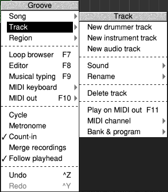
| Menu | Items |
|---|---|
| Song | New; Save...; Export as WAV...; Export as MIDI...; Key → (the 12 keys); Time signature → (2/4 to 12/8, from the playhead's bar); Play on MIDI out (every track; Shift+F11); Import WAV, MIDI, Maestro: drag in (a reminder) |
| Track | New drummer track; New instrument track; New audio track; Sound →; Rename →; Delete track; Play on MIDI out (F11); MIDI channel → (Auto, 1 to 16); Bank & program → (Bank MSB, Bank LSB, Program) |
| Region | Edit; Duplicate; Delete; Split at playhead (Ctrl+T); Copy (Ctrl+C); Paste (Ctrl+V) |
| Loop browser, Editor, Musical typing | Open those windows (F7, F8, F9) |
| MIDI keyboard | Off; MIDI Support; Any port; Port 1 to Port 4: where Groove listens for a MIDI keyboard |
| MIDI out (F10) | Off; MIDI Support; Port 1 to Port 4: where tracks on MIDI out are sent |
| Cycle, Metronome, Count-in, Merge recordings, Follow playhead | Turn each on or off (ticked when on). Count-in and Follow playhead start on. |
| Undo, Redo | Take back the last change, or put it back (Ctrl+Z, Ctrl+Y) |
The icon bar menu: Info → (the Info box); Help...; User guide; Song window; Loop browser; New song; Quit.
Groove is free software under the MIT licence; the licences of the code it includes are in !Groove.Licences. Groove's SoundFont sounds use SoftMIDI's library and TinySoundFont (MIT licence). The SoundFont itself comes with !SoftMIDI.